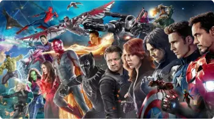

Collections

All Marvel Films

See no special offer restrictions
At first glance, you can decide that Wakanda is an ordinary territory of wild Africa, but this is not so. Here, in the bowels of the desert lands, there are hidden deposits of a unique metal capable of absorbing...
Batman raises stakes in the war on crime. With the help of Lieutenant Jim Gordon and Attorney Harvey Dent, he intends to clear the streets of crime that is poisoning the city. The cooperation is effective, but soon they...
One cunning American, from his student years, had been selling drugs, and now he came up with a scheme of illegal enrichment using the estates of an impoverished English aristocracy and made a very good fortune on ...
Tales of Middle-earth is a chronicle of the Great War for the Ring, a war that lasted more than one thousand years. The one who owned the Ring received power over all living creatures, but was obliged to serve evil...
After the events at the Leipzig-Halle airport, Natasha was overtaken by the mistakes of the past. The Red Room again made itself felt - a program to create Widows - professional killers and spies - just like her. Natasha decides once and for all to deal with people whose efforts she herself became a Widow.
Watch now The time of prosperity is drawing to a close, and the summer, which lasted almost a decade, is dying away. Around the center of power of the Seven Kingdoms, the Iron Throne, a conspiracy is ripening, and during this difficult time, the king decides to seek support from his youth friend Eddard Stark. In a world where everyone - from the king to the mercenary - is eager for power, intrigues and is ready to stick a knife in the back, there is ...
Watch now